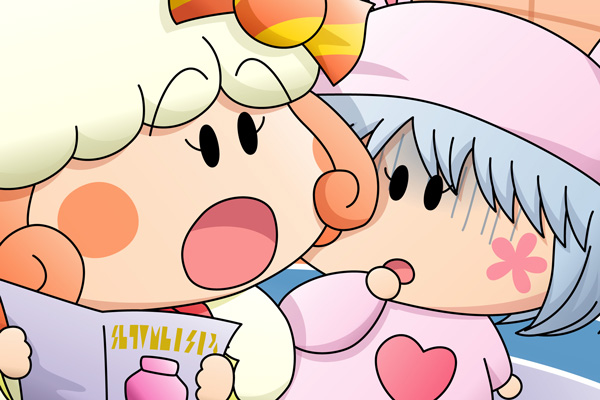

クモモ「いらっしゃ～いクモ！」
パピィが再びミモモショップを訪れると、いつものように笑顔のクモモが迎えました。
クモモ「あ、パピィさん、
今日はとっても素敵なデートだったクモ？」
パピィ「クモモたんっ、いったいどうなっているのよ！」
クモモ「え…？」
パピィ「デートが成功するどころか、ムルモが怒って帰っちゃったわよ！
もう…これじゃあいつもと変わらないじゃないの！」
クモモ「そんなはずはないクモよ…」
クモモはもうひとつ残っていた同じ商品を取り出し、説明書を読み始めました。
クモモ「なになに…クモ。
このお香を焚くと、想い人と両想いになれます。
ただし」
パピィ「ただち？」
パピィがクモモの横に来て、一緒に説明書の続きを読みます。
クモモ「お香の煙に現れた絵の通りにしなくてはいけません。
万が一失敗すると、二人の関係は出会う前の状態に戻されます…クモ」
パピィ「！？」
クモモ「！？」
二人は数秒間無言で固まりました。

パピィ「しょ、しょんな…。
今までのムルモとの思い出がなくなっちゃうなんて…。
しょんなこと絶対にあり得ないわ！」
クモモ「パピィさん…」
パピィはクモモの言葉には耳を貸さず、ミモモショップから出て行きました。
空はとても鮮やかな夕焼けでした。
クモモの失敗というありがちな展開ですみませんが、二人の恋にちょっとした試練を持たせてみました(^^;。あきらめの悪いパピィちゃんだから、ここからがストーリーの本番ですね。パピィちゃんのキャラ設定を崩さないよう気をつけながら続きもしっかり描いていきたいと思います(^^)。
(2006/4/30)